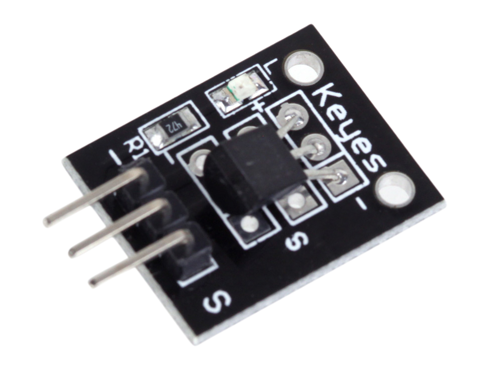
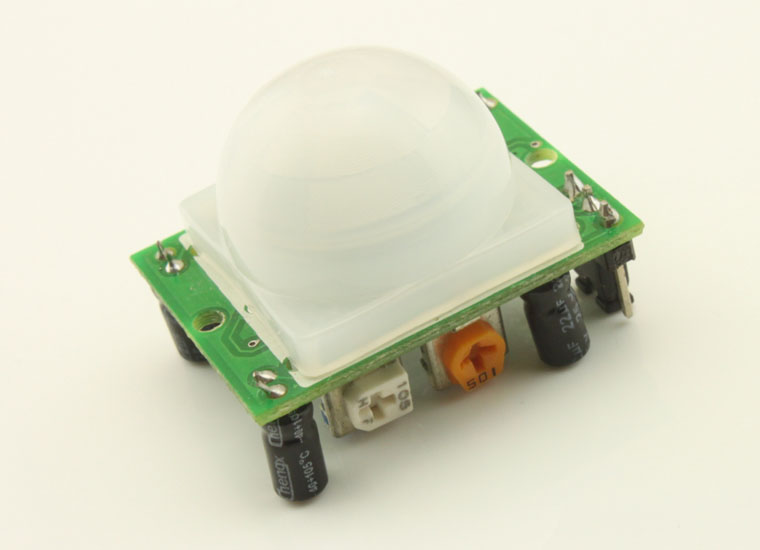

IOT Hackathon
Raspberry PI Monitor
Everyone & Everything is connected
Goal
“Starting from a Software Development Perspective, trigger and nurture curiosity towards IOT - technology, appliances, impact, opportunities and risks.”
Agenda
- Hello world from Arduino
- Hello world from Raspberry PI
- Raspberry PI + Arduino
- Adding a temperature sensor
- Adding a camera
- Adding Motion detection
- Pushing data to the cloud
- Keep on experimenting!
Fasten your seat belts!
I want to get you to the "keep on experimenting" parts as fast as possible. This is where the good stuff happens!
“Every significant journey in computer science starts with a hello world!”
Arduino - hello world
Arduino - The Open Source electronics plattform

Arduino Uno: Micro controller (ATmega328P), 14 Digital I/O Pins - 6 is PWM, 6 Analoge Input Pins, 5v, 3.3v, USB Connection.
A ton of sensors and examples available.
Connecting Laptop/IDE to Arduino
Using USB would be a good start
Start Arduino IDE

Making the internal led blink
|

|
void setup() {
// put your setup code here, to run once:
pinMode(LED_BUILTIN, OUTPUT);
}
void loop() {
// put your main code here, to run repeatedly:
//Set led to high, wait a second, set led to low, wait a second and then repeat
digitalWrite(LED_BUILTIN, HIGH);
delay(1000);
digitalWrite(LED_BUILTIN, LOW);
delay(1000);
}
Adding a breadboard with led
Put led on pin digital 13, led short-pin is negative

Breadboard - a versatile experimentation device
Adding button, turning led on/off
Put led on pin digital 9, button on digital pin 7

int ledPin = 9;
int buttonPin = 7;
void setup() {
pinMode(ledPin, OUTPUT);
pinMode(buttonPin, INPUT);
digitalWrite(ledPin,LOW);
Serial.begin(9600);
}
void loop() {
int buttonStatus = digitalRead(buttonPin);
if (buttonStatus == HIGH) {
digitalWrite(ledPin,HIGH);
//Serial.println("High");
} else {
digitalWrite(ledPin,LOW);
//Serial.println("Low");
}
}
'Tool->Serial monitor' for debugging
Task: Change Arduino logic to include state, know if led is on/off and change accordingly
One press turns led on, the next turns led-off
Raspberry PI- hello world
RaspberryPI - The Credit-card-sized computer

RPI v3, Model B: 1.2 Ghz 64-Bits Quad Core Arm CPU, Wifi, Bluetooth, 1 GB Ram, 4 Usb Ports, 40 GPIO Pins (only Digital), Full HDMI Support, Ethernet port, Audio Jack, Micro SD storage, Own video graphics core
Supporting multiple Linux versions and Windows 10 IOT Core
A huge community, a lot of sensors and examples available.
Connecting peripherals and booting raspbian
HDMI to monitor, USB keyboard and mouse, MicroSD card loaded, USB Micro power adapter
Logging in
- Logging in using pi/"password"
- Booting to Pixel (X) or terminal?
sudo raspi-config"or"berry->Preferences->Raspberry PI Configuration" to change
We have cheated
and pre-installed stuff like
- Raspbian (debian based)
- NodeJs
- Docker
- Wifi config
Using a terminal windows, we create a home (folder) for our project, init git and node
cd
mkdir -p code/iotrocks
cd code/iotrocks
git init
npm init (default on all questions)
touch index.js
Hello world from Rasperry PI & NodeJs
Edit index.js
console.log("Hello world");
Execute our nodejs hello world
node index.js
Hello World! Best regards from Raspberry PI & Arduino
Connect to wifi-network
Use gui tool or edit
identity=""
password=""
Remember sudo and "ifdown wlan0" and "ifup wlan0" to restart network interface
Arduino & and RPI = Happy Marriage?
Introducing

Loading firmata into the Arduino
Firmata is a protocol for communicating with microcontrollers from software on a computer (or smartphone/tablet, etc). The protocol can be implemented in firmware on any microcontroller architecture as well as software on any computer software package
- Start Arduino ide
- Load Standard Firmata "File->Examples->Firmata->StandardFirmata"
- Upload code to Arduino
- Connect Arduino to Raspberry PI
Let us extend our RPI "hello world" to include Johnny-Five"
Edit index.js (geany index.js &) to J5 and the led
var five = require("johnny-five");
var board = new five.Board({
repl: false,
debug: false
});
board.on("ready", function() {
var led = new five.Led(9);
led.on();
});
Preparing johnny-five for node & execute index.js
(Standing in the project directory ~/code/iotrocks/)
npm install johnny-five --save
node index.js
Be patient - it takes 1-2 seconds to turn the led on
Adding support for the button
(Alter the board.on function in index.js)
board.on("ready", function() {
console.log("Board is ready");
var led = new five.Led(9);
var button = new five.Button({
pin: 7,
invert: true
});
led.off();
button.on("press", function() {
led.on();
});
button.on("release", function() {
led.off();
});
});
Run code and verify
Tasks:
- Change Arduino logic to include state, know if led is on/off and change accordingly
- Create a .gitignore to exclude the node_modules/ folder
- Add files to index in git
- Do a git commit (and perhaps tell git about yourself)
Adding a temperature sensor
Dallas DS18B20
ACCURACY +/- 0.5°C (from -10°C to +85°C) SENSITIVITY RANGE -55°C to +125°C (-67°F to +257°F)

A few notes on wiring our sensor; - is ground, S is signal - digital pin, the middle pin is 5v
Extend index.js with this code i the board.on function
board.on("ready", function() {
..
var temp = new five.Thermometer({
controller: "DS18B20",
pin: 2
});
..
button.on("press", function() {
led.on();
console.log("Temperature " + temp.celsius + "C");
});
Run code and verify. Problems?
Tasks:
- Load configurable firmata onto the Arduino
Hint: ConfigurableFirmata is on github - Run & verify latest code
- Add and commit to git
Adding camera
We are using the on-board camera interface on our Raspberry PI

6/8 mp sensor, high def video and photos. A lot of applicances and example code
Wiring the camera

Do a graceful shutdown of the RPI and disconnect power prior to connecting the camera!
Taking snapshots:
We have a lot of application and modules, for both Python and Nodejs to use the on-board camera
raspistill is a good command line utility for using the camera
We have allready enabled the camera interface using raspi-config
Adding camera support - step 1/2
New declaration at top of index.js
var snapshot = require("./snapshot.js");
Extending button function in index.js
button.on("press", function() {
led.on();
console.log("Temperature " + temp.celsius + "C");
snapshot.takeSnapshot(function callback(err) {
if (err) {
console.log('Unable to take camera snapshot ', err);
}
});
});
Adding camera support - step 2/2
Create a new file, snapshot.js
var child_process = require('child_process');
function takeSnapshot(cb) {
var timestamp = Date.now();
var filename = "/tmp/" + timestamp + "_snapshot";
var args = ['-o', filename, '--nopreview'];
var spawn = child_process.spawn('raspistill', args);
spawn.on('exit', function(code) {
console.log('A snapshot was save as ' + filename +
' with exit code, ' + code);
});
}
exports.takeSnapshot = takeSnapshot;
Do a "npm install child_process --save" to include the new module in our eco-system
Tasks:
- Play around with command line arguments for raspistill
- Add and commit to git
Adding motion detection
Say hello to the PIR sensor
Wiring the PIR sensor

Put the signal pin on digital pin 8
Remove PIR lid to identify proper wiring
Adding code to support motions detection
New declaration the board.on function
var motion = new five.Motion(8);
Adding code to motion triggers step 1/2 (board.on)
motion.on("calibrated", function() {
console.log("Motion calibrated");
});
motion.on("motionend", function() {
console.log("Motion ended");
led.off();
});
Adding code to motion triggers step 2/2 (board.on)
motion.on("motionstart", function() {
console.log("Motion detected");
led.on();
snapshot.takeSnapshot(function callback(err) {
if (err) {
console.log('Unable to take camera snapshot ', err);
}
});
});
Tasks:
- Run & Verify code
- Play around with sensitivity and timing on PIR sensor
- Add and commit to git
It's time to put our code on github.com
Tasks:
- Create a repository for you project on github.com - in the swbgo organisation
- Define the new remote for your local git project and push code to github
Hint: We did a video on this in the developer community a few weeks ago - Yammer - You will, most likely, need to create and add ssh keys to your github account
- Push to github and verify
Some code lines
ssh-keygen -t rsa -b 4096 -C "your_email@example.com"
ssh-add ~/.ssh/id_rsa
... add key to you github account
git remote add origin git@github.com:swbgo/"name of repo".git
git push -u origin master
Pushing data to the cloud
We are utilizing Azure Storage - file storage
Our goal is to push the camera snapshot the cloud
Sending snapshots to Cloud Storage
We need to perform a few steps to prepare Azure
- Create storage account in your resource group
- Make a note of Account Name and Key (Access keys)
A word of wizdom - good cloud people are good janitors. Cleaning up and having good cloud hygiene is smart!
We have storage - it is time to prepare our app
First step is to export environment variables that nodejs picks up to access the storage account It would be a good idea to put these into a text file. KEEP THIS INFO OUT OF VERSION CONTOL
export AZURE_STORAGE_ACCOUNT="account name"
export AZURE_STORAGE_ACCESS_KEY="access key"
Next step is to include support for azure storage in nodejs
npm install azure-storage --save
Adding code to our app ... manually takes too long
.. open the following files copy and paste
Sending Sensor data to Elastic Search or some table storage, nosql?
You keep on experimenting!
Some suggestions
Add another sensor, like temperature, light or movements - push data to the cloud
Change instrumentation on cloud side, utilize IOT-Hub & Stream Analytics
Re-Write app to utilize Python rather than NodeJs
With, or without, support from the Arduino
Use other tools to capture and visualize data (like InfluxDB + Graphana)
Create a web application to serve control device and show snapshots. Potential features:
- Show device status
- Turn motion detection on/off
- Show snapshots
- Implement notification & alarms for movements (using email, mobile push, ...)
Capture video
Create web application which steams live video & sensor data from device